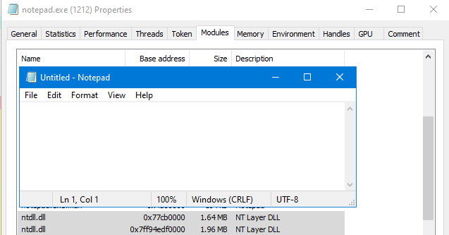
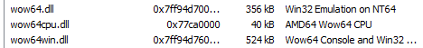
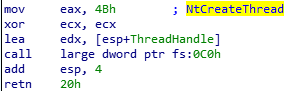
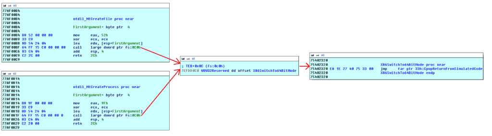
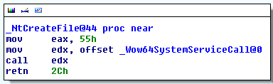
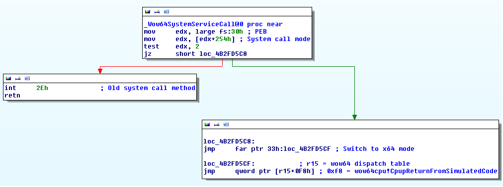

# Syscalls and WoW64
Good stuff.
## About WoW64
•
https://docs.microsoft.com/en-gb/windows/win32/winprog64/wow64-implementation-details?redirectedfrom=MSDN•
https://www.fireeye.com/blog/threat-research/2020/11/wow64-subsystem-internals-and-hooking-techniques.html - Good overview of WoW64
WoW64 - Windows on Windows 64 - supports running 32bit processes on 64bit Windows.
It's implemented by a set of usermode DLLs:
•
Wow64.dll•
Wow64Cpu.dll•
Wow64Win.dll•
IA32Exec.binOn 64bit Windows, everything is 64bit:
the kernel, the EPROCESS struct, the PEB, etc.
The first piece of code to execute in *any* process is a 64bit copy of
Ntdll.dll,
which initialises the process in userland as a 64bit process.
If the process being loaded is 32bit,
Wow64.dll will then take over and load a 32bit copy of
Ntdll.dll and all other required DLLs.
As a result, there will be 2 copies of Ntdll.dll loaded into a 32bit WoW64 process:
• a 32bit Ntdll.dll
• and a 64bit Ntdll.dll
For example, here's a 32bit Notepad.exe running on Windows 10 x64.
You can see the 2 copies of Ntdll.dll.
As well as the WoW64 DLLs.
## Windows 7 SP1 x64 (WoW64)
Below is a
32bit Notepead.exe running on
Windows 7 SP1 x64 calling
NtCreateThread.
Because this is a WoW64 process (a 32bit process running on 64bit Windows),
it will call
NtCreateThread from the 32bit copy of Ntdll.dll that's loaded into its process
(because it is unable to access the 64bit one).
Here is what the 32bit copy of NtCreateThread looks like.
It:
• moves the ordinal value for NtCreateThread (from the SSDT) into EAX
• and calls the code pointed to by
FS + 0x0C0The
FS segment points to the WoW64 TEB - Thread Environment Block.
FS + 0x0c0 will contain the address of
wow64cpu!X86SwitchTo64BitModewhich will switch the CPU into 64bit mode and enter the kernel.
(credit to MalwareTech for image)
## Windows 10 x64 (WoW64)
This is the
32bit NtCreateFile function from a
32bit Ntdll.dll on a
64bit copy of Windows 10,
version
Windows 10 x64 2004 19041.928.
(credit to MalwareTech for images)
It moves the syscall value for NtCreateFile -
55h - into eax
and calls a pointer to a function -
Wow64SystemServiceCallWow64SystemServiceCall checks how it should execute the syscall.
test ANDs against a flag in the PEB - offset
254h - with
2If the result is 0 (i.e. the flag isn't set to
2) then it will perform the old syscall method.
If the flag is set to
2, it will jump and perform the new syscall method with a jump to far ptr.
{kind=link}
{kind=link}
{kind=link}